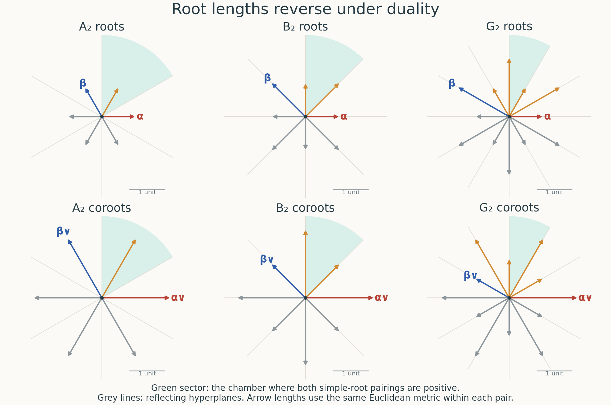

Root data, Weyl chambers and the Bruhat decomposition
Written by GPT-6.1 Sol (OpenAI) in Codex, Ultra setting, October 2026. Self-checked by the writing AI, GPT-6.1 Sol (OpenAI). Public domain (CC0).
A root records how a torus moves a one-dimensional subgroup. Its coroot records the diagonal direction in the associated rank-one group. Keeping both, together with the integral character and cocharacter lattices, distinguishes groups that have the same root system. We first assemble these data, then use cocharacters to describe Borel subgroups and the Bruhat cells. The last part explains which of these constructions survive over an arbitrary base.
The preceding lesson supplies root groups, their canonical line-bundle parametrizations, coroots, and the limit subgroups $U_G(\lambda)$ and $P_G(\lambda)$. For the field arguments we also use the geometric Borel quotient and the simply transitive action of $N_G(T)/T$ on the Borels containing $T$, proved in the first two lessons. We prove the identification of this normalizer quotient with the reflection group here; the arbitrary-base finiteness assertion in the first lesson uses this field calculation.
1. The integral data and their reflections
A root datum consists of finite free lattices $X$ and $X^\vee$, a perfect pairing
$$ \langle\ ,\ \rangle:X\times X^\vee\longrightarrow\mathbf Z, $$finite subsets $\Phi\subset X\setminus\{0\}$ and $\Phi^\vee\subset X^\vee\setminus\{0\}$, and a bijection $\alpha\mapsto\alpha^\vee$ between them. Its axioms are
$$ \langle\alpha,\alpha^\vee\rangle=2, \qquad s_\alpha(\Phi)=\Phi, \qquad s_\alpha^\vee(\Phi^\vee)=\Phi^\vee, $$where
$$ s_\alpha(x)=x-\langle x,\alpha^\vee\rangle\alpha, \qquad s_\alpha^\vee(y)=y-\langle\alpha,y\rangle\alpha^\vee. \tag{1.1} $$We require the bijection to respect these reflections. The reflections square to the identity, are dual under the pairing, and send $\alpha$ and $\alpha^\vee$ to their negatives. These assertions follow by substituting $\langle\alpha,\alpha^\vee\rangle=2$ in (1.1). A datum is reduced if $\Phi\cap\mathbf Q\alpha=\{\alpha,-\alpha\}$ for every root. The empty root set is allowed: it describes a torus. Roots need not span $X_\mathbf Q$.
The Weyl group $W(\mathcal R)$ is the subgroup of $\operatorname{Aut}(X)$ generated by the $s_\alpha$. Here is a proof of its finiteness which also isolates the central directions. Let $V=\mathbf Q\Phi$. The image of $W(\mathcal R)$ on $V$ is finite, since it permutes a finite spanning set. Average a positive definite inner product on $V_\mathbf R$ over this image. Each $s_\alpha|_V$ is then an orthogonal reflection, and hence
$$ \langle v,\alpha^\vee\rangle =\frac{2(v,\alpha)}{(\alpha,\alpha)}\quad(v\in V). \tag{1.2} $$Consequently these functionals span $V^*$. Set
$$ Z_\mathbf Q=\{x\in X_\mathbf Q:\langle x,\alpha^\vee\rangle=0 \text{ for every }\alpha\}. $$The restriction map $X_\mathbf Q\to V^*$ is surjective and is an isomorphism on $V$, by (1.2). Thus $X_\mathbf Q=V\oplus Z_\mathbf Q$. Every reflection fixes $Z_\mathbf Q$ pointwise. The action on $V$ is therefore faithful on the entire Weyl group, proving finiteness. Equation (1.2) also shows that different roots have different coroots, and that proportional coroots come from proportional roots.
The dual datum interchanges $X$ with $X^\vee$ and $\Phi$ with $\Phi^\vee$. Its axioms are the same identities read in the other direction. Reducedness is preserved, by (1.2). A datum is semisimple if $\mathbf Q\Phi=X_\mathbf Q$; in that case
$$ \mathbf Z\Phi\subset X\subset \operatorname{Hom}(\mathbf Z\Phi^\vee,\mathbf Z) $$inside $X_\mathbf Q$. The left and right lattices are the root and weight lattices. The intermediate lattice is information that a picture of the roots alone cannot retain.

Figure 1. Roots and coroots in rank two. The top row uses the Euclidean coordinates $\alpha=(1,0)$ and, respectively, $\beta=(-1/2,\sqrt3/2)$, $(-1,1)$ and $(-3/2,\sqrt3/2)$. Red and blue mark the simple roots; orange marks the other positive roots; grey arrows are negative roots. The bottom row applies the metric identification $r^\vee=2r/(r,r)$ from (1.2). The common scale makes the reversal of long and short lengths visible. Grey lines are reflecting hyperplanes, and the green sector consists of vectors pairing positively with both simple roots. This is a Euclidean realization of the rational spaces, not an identification of the integral character and cocharacter lattices. The definitions above and the reflection proof in Section 3 explain its mathematical content. The reproducible figure source and figure are original CC0 contributions.
2. The root datum of a reductive group
Let $G$ be split connected reductive over a field $k$, and let $T$ be a split maximal torus. Take
$$ X=X^*(T),\qquad X^\vee=X_*(T),\qquad \mathfrak g=\mathfrak t\oplus\bigoplus_{\alpha\in\Phi}\mathfrak g_\alpha. $$The pairing is composition of a character and a cocharacter. The preceding lesson proves that every root space is a line, that there are only the two roots $\pm\alpha$ on its rational line, and that the rank-one map $\varphi_\alpha:\operatorname{SL}_2\to G$ provides an intrinsic coroot with pairing two.
Choose a nonzero vector in $\mathfrak g_\alpha$ and its linked dual in $\mathfrak g_{-\alpha}$. Write the corresponding root parametrizations as $x_\alpha$ and $x_{-\alpha}$. The element
$$ n_\alpha=x_\alpha(1)x_{-\alpha}(-1)x_\alpha(1) \tag{2.1} $$is the image of $\begin{pmatrix}0&1\\-1&0\end{pmatrix}$. It normalizes $T$. On the coroot torus it acts by inversion, and on the codimension-one torus killed by $\alpha$ it acts trivially. These statements follow in the rank-one group and remain valid after its central quotient. On the rational character lattice they give precisely the reflection (1.1), since the two rational torus directions form an isogeny decomposition. Equality on the rational lattice is equality on the integral lattice, which is torsion-free. Thus
$$ n_\alpha t n_\alpha^{-1} =t\,\alpha^\vee(\alpha(t)^{-1}). \tag{2.2} $$Conjugation by any normalizer element permutes the root spaces and their root groups. The uniqueness of the rank-one coroot construction then permutes the coroots in the same way. Applied to (2.1), this proves both reflection axioms and their compatibility.
Theorem 2.1. $(X^*(T),\Phi,X_*(T),\Phi^\vee)$ is a reduced root datum. Its formation commutes with extension of the field.
Proof. The preceding paragraphs verify all its axioms. Reducedness is the rank-one result of the preceding lesson. A split torus has unchanged character lattice under field extension; its weight decomposition and the canonical rank-one maps extend with it. This proves the last assertion. $\square$
For $\operatorname{GL}_n$, both lattices are $\mathbf Z^n$, with dual bases $e_i$ and $e_i^\vee$. The roots and coroots are
$$ \alpha_{ij}=e_i-e_j,\qquad \alpha_{ij}^\vee=e_i^\vee-e_j^\vee\quad(i\ne j). \tag{2.3} $$For $\operatorname{SL}_2$, write $T=\{\operatorname{diag}(t,t^{-1})\}$. In the resulting copies of $\mathbf Z$, the positive root is $2$ and its coroot is $1$. For $\operatorname{PGL}_2$, use $t\mapsto\operatorname{diag}(t,1)$ modulo scalars: the positive root is $1$ and its coroot is $2$. These two data are dual. Their root systems have the same two-point shape, but their integral data distinguish the groups even in characteristic two.
3. Reflections and chambers
In $X^\vee_\mathbf R$, remove the hyperplanes $\langle\alpha,\lambda\rangle=0$. The connected components are Weyl chambers. They are open convex cones, possibly with an unrestricted central factor. A chamber determines the positive system
$$ \Phi^+_\lambda=\{\alpha:\langle\alpha,\lambda\rangle>0\}. \tag{3.1} $$Conversely its signs determine the chamber. Each chamber contains a rational point, and therefore an integral cocharacter after multiplication by a positive integer.
The reflection group is transitive on the chambers. To prove this, connect interior points of two chambers by a polygonal path that crosses only one hyperplane at a time and never their pairwise intersections. Such a path exists after a small perturbation. At a crossing, the reflection in that hyperplane interchanges the two adjacent chambers: choose a point of the wall on no other hyperplane, and a sufficiently small ball around it; the reflection reverses the normal direction and permutes the entire hyperplane arrangement. Successive reflections carry the first chamber to the last. This argument proves transitivity without assuming the normalizer calculation that follows.
We will also use the elementary description of simple roots. In a positive system, a positive root is simple if it is not a sum of two positive roots. The simple roots form a basis of $\mathbf R\Phi$, and every positive root is a nonnegative integral combination of them. Here are the combinatorial details.
First, for nonparallel roots $a,b$, if $(a,b)>0$, at least one of $a-b$ and $b-a$ is a root. This can be checked within their two-dimensional root system. The complete reduced crystallographic possibilities, with $a$ chosen short in the last two, have positive roots
$$ \begin{array}{c|l} A_1\times A_1&a,b\\ A_2&a,b,a+b\\ B_2&a,b,a+b,2a+b\\ G_2&a,b,a+b,2a+b,3a+b,3a+2b. \end{array} \tag{3.2} $$For completeness, this list follows from the reflection axioms, rather than an algebraic-group classification. Two adjacent root lines make an angle $\theta$ for which the product of the two integral Cartan numbers is $4\cos^2\theta$. It is a nonnegative integer less than four. The successive reflections in adjacent lines fill their finite dihedral orbit, so the adjacent angles are respectively $\pi/2,\pi/3,\pi/4,\pi/6$. In the odd case all lines are one orbit and have equal root lengths. In the even nonorthogonal cases there are two orbits; the two Cartan numbers force the squared length ratios two and three. Reflecting two adjacent roots now gives exactly the sets (3.2) and their negatives. Checking subtraction in these displayed sets gives the assertion for every pair; orthogonal pairs have zero inner product and need no assertion.
Distinct simple roots consequently have nonpositive inner product: otherwise the positive one of their differences would decompose one of them. They are linearly independent. Indeed, a linear dependence can be separated into an equality of positive linear combinations with disjoint supports. The inner product of the two sides is nonpositive, while their common squared norm is positive unless both are zero. Applying the chamber functional excludes a nonempty positive combination equal to zero. Finally, decompose any nonsimple positive root into two positive roots and repeat. There is no infinite descent, since the chamber functional has a positive minimum on the finite positive root set. This gives a nonnegative integral expansion in the simple roots and proves spanning.
If $\alpha$ is simple, $s_\alpha$ permutes $\Phi^+\setminus\{\alpha\}$. In the simple-root expansion of a different positive root, at least one other coefficient is nonzero; reflection changes only the coefficient of $\alpha$. All coefficients of a root have the same sign, so the reflected root remains positive. The walls of the chamber are therefore its simple-root walls. The reflections in these walls generate the whole reflection group: their subgroup is already transitive on chambers by the crossing argument, and every root wall becomes a wall of the initial chamber after such a transport. Every root reflection is consequently conjugate to a simple-root reflection in that subgroup.
4. Borel subgroups are positive systems
We first work over an algebraic closure. A Borel subgroup $B$ containing $T$ contains exactly one of $U_\alpha,U_{-\alpha}$ for every root. Indeed, $B\cap C_G(T_\alpha)$ is a Borel subgroup of the rank-one centralizer, by the centralizer–Borel argument of the preceding lesson. There its two possibilities are the two triangular subgroups constructed in rank one. In particular,
$$ \dim B=\dim T+\tfrac12|\Phi|. \tag{4.1} $$For an integral cocharacter $\lambda$ in a chamber, the limit construction gives
$$ L_G(\lambda)=T,\qquad P_G(\lambda)=T\ltimes U_G(\lambda), \qquad \operatorname{Lie}U_G(\lambda) =\bigoplus_{\langle\alpha,\lambda\rangle>0}\mathfrak g_\alpha. \tag{4.2} $$The equality $L_G(\lambda)=T$ follows because the smooth connected centralizer has Lie algebra $\mathfrak t$. The second group is connected solvable and hence lies in a Borel subgroup. Its dimension is (4.1), so it is that Borel subgroup. The root groups of positive sign lie in $U_G(\lambda)$: their rank-one parametrizations are multiplied by $t^{\langle\alpha,\lambda\rangle}$, which tends to zero. Thus $P_G(\lambda)$ depends only on the chamber. Conversely, two such subgroups with different signs have different Lie algebras, so their chambers are different.
Every Borel containing $T$ arises this way. Choose one $P_G(\lambda)$. The normalizer quotient acts transitively on Borels containing $T$, by the earlier torus conjugacy argument. If $n$ carries this subgroup to $B$, then it carries the cocharacter to $n\lambda n^{-1}$ and (4.2) to the Lie algebra of $B$. Thus $B=P_G(n\lambda n^{-1})$.
The construction is defined over $k$ because $T$ is split and $\lambda$ is integral in its character-dual lattice. Geometric equality of the resulting smooth closed subgroups descends. It follows that all the geometric Borels containing $T$ are defined over $k$.
Theorem 4.1. For a split reductive group over any field, Borels containing its split maximal torus correspond bijectively to positive systems. The normalizer Weyl group equals the reflection Weyl group and acts simply transitively on these systems.
Proof. We have proved the correspondence, and it respects the normalizer action. Each root reflection is represented by (2.1), so the reflection group embeds in the normalizer quotient. It is transitive on chambers by Section 3. The normalizer quotient is simply transitive on the corresponding Borels: a normalizer element fixing a Borel lies in $N_G(B)\cap N_G(T)=B\cap N_G(T)=T$. Hence a transitive subgroup of this simply transitive permutation group must be the whole group. This proves both equality and freeness. Products of (2.1) give representatives $n_w\in N_G(T)(k)$ for every $w$. $\square$
5. Coordinates on the unipotent radicals
We need actual scheme coordinates, rather than only equality of dimensions. The following graded argument works over a base ring $R$ as well as over a field.
Lemma 5.1. Suppose a smooth affine $R$-scheme $Y$ of finite presentation has a section $e$ and a $\mathbf G_m$-action which extends to $\mathbf A^1$ and sends $0\times Y$ to $e$. Suppose the tangent module at $e$ is free with positive weights $d_1,\ldots,d_N$. A $\mathbf G_m$-equivariant map from $\mathbf A_R^N$, with these weights, to $Y$ whose differential at zero is an isomorphism is an isomorphism.
Proof. Write $A=\Gamma(Y,\mathcal O_Y)$. Extension of the action gives a nonnegative grading. Contraction to $e$ makes $A_0=R$, and the augmentation ideal is $I=\bigoplus_{d>0}A_d$. Choose finitely many homogeneous algebra generators; their positive degrees imply that the degree filtration and the $I$-adic filtration are cofinal. Thus completion retains every finite degree component faithfully.
The given map is étale along the zero section, since both schemes are smooth and its differential is invertible there. Equivalently, in coordinates its invertible linear term allows unique successive solution modulo $I^m$: once a solution is known modulo $I^m$, the next correction is the solution of the same invertible linear system in $I^m/I^{m+1}$. It induces an isomorphism on the formal completions at the sections. The isomorphism respects degrees. Restricting it and its inverse to each finite degree component, and then taking their direct sums, gives an isomorphism of the original graded algebras. This proves the assertion. $\square$
For any ordering $\alpha_1,\ldots,\alpha_N$ of $\Phi^+$, multiplication gives
$$ \prod_i U_{\alpha_i}\xrightarrow{\sim}U_G(\lambda). \tag{5.1} $$Indeed both sides are contracted by $\lambda$, and the differential is the direct-sum identification of their distinct root lines. After trivializing these lines, Lemma 5.1 applies; the result descends from these local trivializations. We denote the group by $U^+$, independently of the ordering. Applying the same argument to $-\lambda$ and using the open immersion in the preceding lesson gives the big cell
$$ U^-\times T\times U^+\hookrightarrow G. \tag{5.2} $$The inverse of (5.1) provides root coordinates. For roots $a,b$ with $b\ne\pm a$, choose a positive system containing them. The commutator has the form
$$ [x_a(u),x_b(v)] =\prod_{ia+jb\in\Phi,\ i,j>0} x_{ia+jb}(C_{ij}u^iv^j). \tag{5.3} $$Here the order is fixed, and the coefficients depend on the parametrizations and order. To prove the formula, take any root coordinate of the commutator. It is a polynomial in $u,v$, equivariant for $T$. Its monomials must have weight equal to that root. Setting either variable to zero makes the commutator one, so both exponents must be positive. Since $a,b$ are linearly independent, the exponents for a given target root are unique. This proves (5.3), including over rings with nilpotents; distinct torus characters are distinct homogeneous degrees, so no cancellation by a characteristic is involved.
We shall need root subsets $\Psi=\Phi^+\cap C$ where $C$ is closed under addition. Setting the coordinates outside $\Psi$ to zero in (5.1) gives a smooth closed subgroup $U_\Psi$, directly parametrized by the groups in $\Psi$ in any order. To check the subgroup assertion, use the torus-equivariant coordinate polynomials for multiplication and inversion. Every nonconstant monomial has target weight equal to the sum of its input weights. A sum of weights in $C$ is in $C$, so a coordinate outside $\Psi$ remains zero. Different orderings give the same subgroup: in the coordinates of one ordering the product in another has no component outside $\Psi$, and its invertible differential and contraction give an isomorphism by Lemma 5.1.
In particular this applies to the two subsets
$$ \Psi_w=\Phi^+\cap w\Phi^- ,\qquad \Theta_w=\Phi^+\cap w\Phi^+. \tag{5.4} $$Their cones are the intersections of two open linear half-spaces. Ordering the first subset before the second in (5.1) gives $U^+=U_{\Psi_w}U_{\Theta_w}$ as a product of schemes.
6. The Bruhat cells from a projective limit
We spell out the projective geometric argument used here.
Lemma 6.1. Let a $\mathbf G_m$ act on a smooth projective variety with an equivariant projective embedding. Suppose its fixed points are isolated. The points whose limit at zero is a fixed point $p$ form an affine locally closed scheme $Y_p$, contracted to $p$, and its tangent space at $p$ is the positive-weight part of $T_pY$. An equivariant map from a positive-weight affine space to $Y_p$, with invertible differential at zero, is an isomorphism.
Proof. Diagonalize the action on the vector space of the embedding. Represent $p$ by an eigenvector of weight $m$ and choose one of its nonzero coordinates. In the corresponding affine chart, the limit is $p$ precisely when all coordinates of weight less than $m$ vanish and all ratios of weight $m$ coordinates equal their values at $p$. The remaining coordinates have strictly positive relative weights. Intersect this affine linear space with the projective variety. This constructs $Y_p$ as a closed subscheme of an affine space, with the stated limit condition.
At $p$, choose homogeneous formal parameters in the smooth completed local ring; this is possible by the weight decomposition and lifting a basis of the cotangent space. The limit equations set the negative-weight parameters to zero. There are no zero-weight parameters because the fixed scheme is smooth with zero tangent dimension. Thus the completed local ring of $Y_p$ is the formal power-series ring in the positive parameters. It is smooth at $p$ and has the asserted tangent space. The nonsmooth locus of $Y_p$ would be a closed invariant subset. If nonempty, contraction would put $p$ in it, a contradiction. Hence $Y_p$ is smooth everywhere. Lemma 5.1 proves the last assertion. These constructions commute with extension of the field. $\square$
Let $B$ correspond to $\Phi^+$ and choose an integral cocharacter $\lambda$ in its chamber. The projective variety $G/B$ has an equivariant projective embedding, from the ample homogeneous line bundle in the quotient construction of the preceding lesson. Its $T$-fixed points are the points $n_wB$, $w\in W$. To see this, a fixed coset represents a Borel containing $T$, and Theorem 4.1 applies.
There are no additional fixed points of $\lambda$. Each connected component of the proper fixed scheme is $T$-stable and therefore contains a $T$-fixed point by the torus fixed-point theorem. At such a point the tangent weights are roots, all nonzero on $\lambda$. Its fixed tangent space is zero. Smoothness of fixed schemes for a torus then makes the component a point. The fixed scheme is consequently the same finite reduced set $\{n_wB\}$.
At $n_wB$, the tangent weights of $G/B$ are $\Phi\setminus w\Phi^+$, with the toral summand removed. Its positive-weight part is precisely
$$ \bigoplus_{\alpha\in\Psi_w}\mathfrak g_\alpha. $$The map $U_{\Psi_w}\to G/B$, $u\mapsto un_wB$, lands in the attracting scheme of this point. It is equivariant and its differential is the displayed isomorphism. Lemma 6.1 therefore gives an isomorphism
$$ U_{\Psi_w}\xrightarrow{\sim}(G/B)_{n_wB}^+. \tag{6.1} $$Every geometric point of a projective variety has a limit under $\lambda(t)$ as $t\to0$, as follows directly from the least nonzero weight in its projective coordinates. That limit is fixed and unique. Thus the schemes (6.1) are disjoint locally closed strata covering $G/B$.
They are also exactly its $B$-orbits. In (5.4), $U_{\Theta_w}$ fixes $n_wB$, since each of its root groups is contained in $n_wBn_w^{-1}$. The torus fixes the same point. The product decomposition of $U^+$ therefore shows
$$ Bn_wB/B=U_{\Psi_w}n_wB/B. $$Pull back the principal $B$-bundle $G\to G/B$ to this stratum. It has the section $u\mapsto un_w$, so it is trivial. We obtain an isomorphism of locally closed schemes
$$ U_{\Psi_w}\times B\xrightarrow{\sim}Bn_wB, \qquad (u,b)\longmapsto un_wb. \tag{6.2} $$Theorem 6.2 (Bruhat decomposition). For a split connected reductive group over any field $k$,
$$ G=\coprod_{w\in W}Bn_wB \quad\text{as a locally closed stratification}, \qquad G(k)=\coprod_{w\in W}B(k)n_wB(k). \tag{6.3} $$Moreover $Bn_wB$ has dimension $\dim B+|\Psi_w|$, and its quotient by the right $B$-action is an affine space of dimension $|\Psi_w|$.
Proof. The geometric stratification and the scheme isomorphisms were just proved. They are defined over $k$: the root groups, cocharacter, and representatives (2.1) all are. For $g\in G(k)$ its image in $G/B$ belongs to exactly one stratum; the inverse of (6.1) is defined over $k$, so it supplies $u\in U_{\Psi_w}(k)$. Equality of the two cosets means $(un_w)^{-1}g\in B(k)$. This proves (6.3) without assuming that rational points are dense or that the field is infinite. Conversely (6.2) makes every such product a point of the indicated stratum. Its dimension and affine-space assertion follow from (5.1). $\square$
The disjoint-union notation in (6.3) describes strata and points. It does not assert that the cells are open-and-closed components, or that a morphism from a general scheme lands in one cell globally. In $\operatorname{SL}_2$ the two cells have dimensions two and three, and the latter is open dense.
7. Central quotients over a base
The rank-one construction in the preceding lesson uses central quotients, including quotients by non-smooth centres. We now supply their affine construction.
Theorem 7.1. Let $G$ be a reductive group over a scheme $S$, and let $H\subset Z(G)$ be a closed subgroup of multiplicative type of finite presentation. The fppf quotient $G/H$ is an affine reductive $S$-group. Formation of the quotient commutes with arbitrary base change. Its root groups are the images of those of $G$; for a split maximal torus $T$ its maximal torus is $T/H$.
Proof. Work étale locally on $S=\operatorname{Spec}R$, with $H=D_R(M)$. Its character group $M$ is finitely generated. Right translation gives a grading $A=\Gamma(G,\mathcal O_G)=\bigoplus_{m\in M}A_m$. Put $B=A_0$ and $Q=\operatorname{Spec}B$. Invariants commute with any base change because they are a direct grading summand. The same summand proves that $B$ is flat over $R$.
We check finite presentation. The data descend to a finitely generated $\mathbf Z$-algebra, including the smooth group, the closed embedding of $D(M)$, and centrality; all are finite-presentation equations. We may therefore assume $R$ Noetherian. Choose finitely many homogeneous generators of $A$ as an $R$-algebra and a graded surjection $P=R[z_1,\ldots,z_n]\to A$. Its invariant part surjects onto $B$. The monomials of weight zero in $P$ are finitely generated as a semigroup: their indecomposable exponent vectors form an antichain in $\mathbf N^n$, since if $u\le v$ are two such vectors, $v-u$ also has weight zero. Every antichain is finite. The latter assertion follows inductively on $n$ by extracting a nondecreasing subsequence of the first coordinates from any infinite sequence, then applying the induction to the remaining coordinates. Every zero-weight vector is a sum of indecomposables by induction on its coordinate sum. Thus $P_0$, and then $B$, are finitely generated. They are finitely presented over Noetherian $R$. Descent and base change now give finite presentation in general.
Next we prove that $q:G\to Q$ is an $H$-torsor. First suppose $R=k$ is algebraically closed. The closed embedding $H\hookrightarrow G$ gives a graded surjection $A\to k[M]$. For each of finitely many generators $m_i$ of $M$, choose elements $a_i\in A_{m_i}$ and $b_i\in A_{-m_i}$ restricting to the corresponding characters of $H$. Then $f=\prod_i a_ib_i\in B$ has value one at the identity. In $A_f$, every $a_i$ and $b_i$ is a unit. Each homogeneous component is therefore a free rank-one $B_f$-module generated by a homogeneous unit; multiplication of components is an isomorphism. Explicitly the map
$$ A_f\otimes_{B_f}A_f\longrightarrow A_f\otimes_k k[M], \qquad a\otimes c_m\longmapsto ac_m\otimes e_m $$is an isomorphism: for a homogeneous unit $u_m$ its inverse sends $a\otimes e_m$ to $a u_m^{-1}\otimes u_m$. Also $A_f=\bigoplus_m B_f u_m$ is faithfully flat over $B_f$. This proves the torsor assertion on $D(f)$.
Left translation by $g\in G(k)$ preserves the grading and gives the same proof on $D(f_g)$, where $f_g(x)=f(g^{-1}x)$. These opens cover $Q$. Indeed $B\hookrightarrow A$ has a $B$-linear retraction, so $A\otimes_B\kappa(y)$ is nonzero for every prime $y$ of $B$ and $q$ is surjective. A closed point of $Q$ has a $k$-point $g$ above it, and $f_g(g)=1$. Since $Q$ is of finite type over $k$, an uncovered nonempty closed subset would contain a closed point. Hence there is no uncovered point.
Return to general $R$. Both $G$ and $Q$ are flat of finite presentation over $R$, and the geometric-fibre morphisms are faithfully flat torsors by the preceding calculation. The fibre criterion for flatness gives that $q$ is flat and of finite presentation; it is surjective by the invariant retraction. The natural morphism $G\times H\to G\times_QG$ is an isomorphism on geometric fibres. Both sides are flat of finite presentation over $R$. The fibre criterion applied to this morphism makes it étale, and its fibrewise bijectivity makes it an isomorphism. Thus $q$ is an fppf torsor. Centrality permits multiplication and inversion to descend, making $Q$ a group; this also identifies $Q$ with the fppf quotient.
Its geometric fibres are smooth connected reductive groups. Here is a proof of smoothness and reductivity that does not assume a quotient theorem. Over an algebraically closed field, $A$ is a normal domain, and its invariant subring $B$ is normal: an element of $\operatorname{Frac}B$ integral over $B$ is integral over $A$, hence in $A$, and is invariant, hence in $B$. A finite-type normal group over a perfect field has a nonempty smooth open subset; translation carries a smooth point to every closed point, so it is smooth. It is connected because $G\to Q$ is surjective. If its smooth connected unipotent radical were nontrivial, its inverse image would be a solvable normal subgroup of $G$. The reduced identity component of that inverse image is smooth, connected, solvable and normal, so is a central torus by reductivity. It surjects onto the radical: the finitely many components of the inverse image cannot map onto a connected group with the identity component having smaller dimension. A torus has trivial image in a unipotent group, a contradiction. Flatness, finite presentation and these smooth geometric fibres prove smoothness of $Q/S$.
Finally, after making $T$ split, $H\subset T$, and $T/H$ is a torus: its characters are the kernel of $X^*(T)\to X^*(H)$, a free sublattice. The big cell is $H$-stable, with $H$ acting only on its torus factor. Its quotient is the open subscheme
$$ U^-\times(T/H)\times U^+\subset Q. \tag{7.1} $$Root groups intersect $H$ trivially and hence embed in $Q$. Their images are closed: the inverse image of such an image is $H U_\alpha$, a closed subscheme of the triangular rank-one subgroup, and closedness descends along $q$. The cells (7.1) show that their weights are the same roots, now regarded as characters of $T/H$. There are no additional zero weights, so $T/H$ is a maximal torus by the centralizer criterion. Everything constructed by invariants commutes with base change, and the local constructions glue uniquely as fppf quotients. $\square$
The only general morphism tools used in this proof are the fibre criteria for flatness, smoothness and étaleness: a finite-presentation morphism between schemes flat over the same base is flat if its fibre morphisms are flat; a flat finite-presentation morphism with smooth (respectively étale) fibres is smooth (respectively étale). These are general algebraic-geometry prerequisites, not reductive-group classification results.
8. Splittings and subgroup constructions in families
Over a scheme, saying that a maximal torus is split does not trivialize its root lines. We call a reductive group split with specified root datum when its maximal torus is identified with $D_S(X)$, its root datum is the indicated constant datum, and its root lines are trivializable. A pinning additionally chooses a nowhere-vanishing section in each simple root line. These are the objects classified in the next lesson.
Every reductive group acquires such a splitting and a pinning étale locally. The first lesson provides a maximal torus and then an étale splitting of it. Its finite weight decomposition has locally constant ranks; the root set can therefore be made constant after an open localization. Coroots are sections of the locally constant cocharacter sheaf and can likewise be made constant. Trivialize the finitely many simple root lines on a further open cover. The root groups and rank-one constructions then supply the pinning. No assumption that the original base is reduced is used.
The coordinate proof in Section 5 works over this cover and descends without chosen parametrizations. Thus for a positive system the product of its root line bundles is $U^+$, and (5.2) is an open immersion over the base. For a cocharacter $\lambda$, the smooth closed subgroup $P_G(\lambda)$ has roots of nonnegative pairing; its Levi subgroup $L_G(\lambda)$ has roots of zero pairing and is reductive, being a torus centralizer. Its unipotent subgroup $U_G(\lambda)$ has roots of positive pairing. The limit homomorphism gives the actual Levi decomposition $P_G(\lambda)=L_G(\lambda)\ltimes U_G(\lambda)$. Relative parabolic quotients and their parameter scheme are the subject of the last lesson.
For the quotient in Theorem 7.1, the root datum is especially transparent. Let $X'=\ker(X\to X^*(H))$. The roots lie in $X'$ because $H$ is central. Characters change from $X$ to $X'$, cocharacters by the dual map, and each coroot becomes its image under $T\to T/H$. The pairing with every root remains two. A central quotient can change the integral lattice without changing the root system.
The torus example warns against silently choosing one datum on a disconnected base. On one component take $\mathbf G_m$ and on another take $\mathbf G_m^2$. This is a reductive group with no single constant character lattice on the whole base. All constant-datum statements are made componentwise or on the explicitly stated covers.
9. Exercises and solutions
Exercise 9.1 (easy). Write the complete root datum of $\operatorname{GL}_n$ and identify its central rational direction.
Solution. The lattices and roots are (2.3), with $\langle e_i,e_j^\vee\rangle=\delta_{ij}$. Reflection in $e_i-e_j$ exchanges coordinates $i,j$. The root span is $\{(a_i):\sum a_i=0\}$, while its orthogonal central direction is $\mathbf Q(1,\ldots,1)$. The centre has character group $\mathbf Z^n/\mathbf Z\Phi\simeq\mathbf Z$, the quotient map being summation. For $n=1$ the root set is empty and the entire lattice is central.
Exercise 9.2 (medium). Verify integrally that the data of $\operatorname{SL}_2$ and $\operatorname{PGL}_2$ are dual. Explain why identifying their rational root systems does not identify their groups.
Solution. In the coordinates of Section 2, the pairs (positive root, positive coroot) are $(2,1)$ and $(1,2)$ in dual copies of $\mathbf Z$. Interchanging lattices interchanges these pairs. The reflection is multiplication by $-1$ in both. The quotient of the character lattice by the root lattice is $\mathbf Z/2$ for the first and zero for the second, so their centres are $\mu_2$ and the trivial group. This distinction holds scheme-theoretically in characteristic two.
Exercise 9.3 (medium). Show that the Weyl group of $\operatorname{GL}_n$ is $S_n$, generated by its root reflections.
Solution. Formula (1.1) for $e_i-e_j$ sends $e_i$ to $e_j$, $e_j$ to $e_i$, and fixes the other basis vectors. Thus its reflection is the transposition $(ij)$. Transpositions generate every permutation, by breaking each cycle into transpositions. Conversely all products of these reflections are coordinate permutations. The lattice representation is faithful, so the reflection group is exactly $S_n$; Theorem 4.1 identifies it with the normalizer quotient.
Exercise 9.4 (hard). Prove $\operatorname{GL}_n(k)=\coprod_{w\in S_n}B(k)wB(k)$ by upper triangular row and column operations, where $B$ is upper triangular. Prove uniqueness of the permutation.
Solution. In the bottom row choose its leftmost nonzero entry, in column $j$. Scale that row to make the entry one. Add multiples of column $j$ to columns to its right, making the other bottom-row entries zero; these are permitted right upper triangular operations. Entries to its left were already zero. Add multiples of the bottom row to higher rows to clear column $j$; these are permitted left upper triangular operations. Delete the bottom row and column $j$. The remaining square matrix is invertible, by expansion of the determinant along the cleared row. Repeat with its bottom row, retaining the original order of the surviving columns. Operations on these rows and columns extend to upper triangular operations on the original matrix and preserve every previously cleared pivot. Induction gives one nonzero pivot in every row and column, all scaled to one, hence a permutation matrix. This proves existence over every field.
For uniqueness consider, for every $i,j$, the rank $r_{ij}$ of the submatrix in rows $i,\ldots,n$ and columns $1,\ldots,j$. Left upper triangular operations mix these bottom rows only with one another, and right upper triangular operations mix these first columns only with one another. Hence all $r_{ij}$ are invariant. In a permutation matrix they count pivots in that rectangle. The difference
$$ r_{ij}-r_{i+1,j}-r_{i,j-1}+r_{i+1,j-1} $$is one exactly at a pivot $(i,j)$ and zero otherwise, with empty boundary rectangles having rank zero. These invariants recover the permutation uniquely. The double cosets are therefore disjoint.
Exercise 9.5 (families). Let $L$ be a nontrivial line bundle. For $G=\operatorname{SL}(\mathcal O\oplus L)$, describe the positive unipotent radical and decide whether the displayed diagonal torus has a global pinning.
Solution. Choose the upper root as positive. Its group is the additive line bundle $\mathbf V(L^{-1})$, and the triangular subgroup is $T\ltimes\mathbf V(L^{-1})$. A pinning would choose a nowhere-vanishing section of $L^{-1}$ and therefore trivialize $L$. Hence this pair has no global pinning, although it has one on every open set trivializing $L$. Its relative big cell is $\mathbf V(L)\times T\times\mathbf V(L^{-1})$.
The course prerequisite guide records the exact supporting statements and which lessons are published or still planned.
References and prerequisites
The root datum terminology is due to Demazure in SGA 3, Exposé XXI. The group constructions and relative statements are compared with Brian Conrad, Reductive group schemes, §§1.3–1.4 and 5.1–5.2, and J. S. Milne, Algebraic Groups, 2017, Chapter 21 and Appendix C. These works receive credit for the theory; the proofs in this lesson, including the attracting-cell and central-quotient arguments, are written out here.
The general fibre criteria used in Section 7 belong to the programme's morphism theory. The geometric homogeneous quotient used in Section 6 is the field quotient construction introduced in Quotients and torsors, together with the self-normalizing projective-quotient construction in the preceding lesson. Their precise prerequisite locators and proof states are recorded in the course dependency list.
Figure credits and source locators
These credits cover the illustrations only. They do not change the lesson’s proof status.
- rank-two-roots — GPT-6.1 Sol (OpenAI), Codex, Ultra setting
Original CC0 coordinate construction and rendering.
- Root-data metric and reflection identities, lesson four, Sections 1 and 3.
Figure SHA-256:
C28DB0E47A4D4188253E0CB53E29F0AFD71B0051EAF5F379FA668E4343C6794D